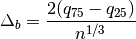
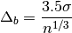

hyperspy.misc.borrowed.astroML package¶
Submodules¶
hyperspy.misc.borrowed.astroML.bayesian_blocks module¶
Bayesian Block implementation¶
Dynamic programming algorithm for finding the optimal adaptive-width histogram.
Based on Scargle et al 2012 [R12]
References¶
| [R12] | http://adsabs.harvard.edu/abs/2012arXiv1207.5578S |
-
class
hyperspy.misc.borrowed.astroML.bayesian_blocks.Events(p0=0.05, gamma=None)¶ Bases:
hyperspy.misc.borrowed.astroML.bayesian_blocks.FitnessFuncFitness for binned or unbinned events
Parameters: p0 : float
False alarm probability, used to compute the prior on N (see eq. 21 of Scargle 2012). Default prior is for p0 = 0.
gamma : float or None
If specified, then use this gamma to compute the general prior form, p ~ gamma^N. If gamma is specified, p0 is ignored.
Attributes
argsMethods
fitness(N_k, T_k)gamma_prior(N, Ntot)Basic prior, parametrized by gamma (eq. p0_prior(N, Ntot)prior(N, Ntot)validate_input(t, x, sigma)Check that input is valid -
fitness(N_k, T_k)¶
-
prior(N, Ntot)¶
-
-
class
hyperspy.misc.borrowed.astroML.bayesian_blocks.FitnessFunc(p0=0.05, gamma=None)¶ Bases:
objectBase class for fitness functions
Each fitness function class has the following: - fitness(...) : compute fitness function.
Arguments accepted by fitness must be among [T_k, N_k, a_k, b_k, c_k]- prior(N, Ntot) : compute prior on N given a total number of points Ntot
Attributes
argsMethods
fitness(**kwargs)gamma_prior(N, Ntot)Basic prior, parametrized by gamma (eq. p0_prior(N, Ntot)prior(N, Ntot)validate_input(t, x, sigma)Check that input is valid -
args¶
-
fitness(**kwargs)¶
-
gamma_prior(N, Ntot)¶ Basic prior, parametrized by gamma (eq. 3 in Scargle 2012)
-
p0_prior(N, Ntot)¶
-
prior(N, Ntot)¶
-
validate_input(t, x, sigma)¶ Check that input is valid
-
class
hyperspy.misc.borrowed.astroML.bayesian_blocks.PointMeasures(p0=None, gamma=None)¶ Bases:
hyperspy.misc.borrowed.astroML.bayesian_blocks.FitnessFuncFitness for point measures
Parameters: gamma : float
specifies the prior on the number of bins: p ~ gamma^N if gamma is not specified, then a prior based on simulations will be used (see sec 3.3 of Scargle 2012)
Attributes
argsMethods
fitness(a_k, b_k)gamma_prior(N, Ntot)Basic prior, parametrized by gamma (eq. p0_prior(N, Ntot)prior(N, Ntot)validate_input(t, x, sigma)Check that input is valid -
fitness(a_k, b_k)¶
-
prior(N, Ntot)¶
-
-
class
hyperspy.misc.borrowed.astroML.bayesian_blocks.RegularEvents(dt, p0=0.05, gamma=None)¶ Bases:
hyperspy.misc.borrowed.astroML.bayesian_blocks.FitnessFuncFitness for regular events
This is for data which has a fundamental “tick” length, so that all measured values are multiples of this tick length. In each tick, there are either zero or one counts.
Parameters: dt : float
tick rate for data
gamma : float
specifies the prior on the number of bins: p ~ gamma^N
Attributes
argsMethods
fitness(T_k, N_k)gamma_prior(N, Ntot)Basic prior, parametrized by gamma (eq. p0_prior(N, Ntot)prior(N, Ntot)validate_input(t, x, sigma)-
fitness(T_k, N_k)¶
-
validate_input(t, x, sigma)¶
-
-
hyperspy.misc.borrowed.astroML.bayesian_blocks.bayesian_blocks(t, x=None, sigma=None, fitness='events', **kwargs)¶ Bayesian Blocks Implementation
This is a flexible implementation of the Bayesian Blocks algorithm described in Scargle 2012 [R13]
Parameters: t : array_like
data times (one dimensional, length N)
x : array_like (optional)
data values
sigma : array_like or float (optional)
data errors
fitness : str or object
the fitness function to use. If a string, the following options are supported:
- ‘events’ : binned or unbinned event data
extra arguments are p0, which gives the false alarm probability to compute the prior, or gamma which gives the slope of the prior on the number of bins.
- ‘regular_events’ : non-overlapping events measured at multiples
of a fundamental tick rate, dt, which must be specified as an additional argument. The prior can be specified through gamma, which gives the slope of the prior on the number of bins.
- ‘measures’ : fitness for a measured sequence with Gaussian errors
The prior can be specified using gamma, which gives the slope of the prior on the number of bins. If gamma is not specified, then a simulation-derived prior will be used.
Alternatively, the fitness can be a user-specified object of type derived from the FitnessFunc class.
Returns: edges : ndarray
array containing the (N+1) bin edges
See also
astroML.plotting.hist- histogram plotting function which can make use of bayesian blocks.
References
[R13] (1, 2) Scargle, J et al. (2012) http://adsabs.harvard.edu/abs/2012arXiv1207.5578S Examples
Event data:
>>> t = np.random.normal(size=100) >>> bins = bayesian_blocks(t, fitness='events', p0=0.01)
Event data with repeats:
>>> t = np.random.normal(size=100) >>> t[80:] = t[:20] >>> bins = bayesian_blocks(t, fitness='events', p0=0.01)
Regular event data:
>>> dt = 0.01 >>> t = dt * np.arange(1000) >>> x = np.zeros(len(t)) >>> x[np.random.randint(0, len(t), len(t) / 10)] = 1 >>> bins = bayesian_blocks(t, fitness='regular_events', dt=dt, gamma=0.9)
Measured point data with errors:
>>> t = 100 * np.random.random(100) >>> x = np.exp(-0.5 * (t - 50) ** 2) >>> sigma = 0.1 >>> x_obs = np.random.normal(x, sigma) >>> bins = bayesian_blocks(t, fitness='measures')
hyperspy.misc.borrowed.astroML.histtools module¶
Tools for working with distributions
-
class
hyperspy.misc.borrowed.astroML.histtools.KnuthF(data)¶ Bases:
objectClass which implements the function minimized by knuth_bin_width
Parameters: data : array-like, one dimension
data to be histogrammed
See also
knuth_bin_width,astroML.plotting.histNotes
the function F is given by

where
 is the Gamma function,
is the Gamma function,  is the number of
data points,
is the number of
data points,  is the number of measurements in bin
is the number of measurements in bin  .
.Methods
__call__(M)bins(M)Return the bin edges given a width dx eval(M)Evaluate the Knuth function -
bins(M)¶ Return the bin edges given a width dx
-
eval(M)¶ Evaluate the Knuth function
Parameters: dx : float
Width of bins
Returns: F : float
evaluation of the negative Knuth likelihood function: smaller values indicate a better fit.
-
-
hyperspy.misc.borrowed.astroML.histtools.freedman_bin_width(data, return_bins=False)¶ Return the optimal histogram bin width using the Freedman-Diaconis rule
Parameters: data : array-like, ndim=1
observed (one-dimensional) data
return_bins : bool (optional)
if True, then return the bin edges
Returns: width : float
optimal bin width using Scott’s rule
bins : ndarray
bin edges: returned if return_bins is True
See also
knuth_bin_width,scotts_bin_width,astroML.plotting.histNotes
The optimal bin width is

where
 is the
is the  percent quartile of the data, and
is the number of data points.
percent quartile of the data, and
is the number of data points.
-
hyperspy.misc.borrowed.astroML.histtools.histogram(a, bins=10, range=None, **kwargs)¶ Enhanced histogram
This is a histogram function that enables the use of more sophisticated algorithms for determining bins. Aside from the bins argument allowing a string specified how bins are computed, the parameters are the same as numpy.histogram().
Parameters: a : array_like
array of data to be histogrammed
bins : int or list or str (optional)
If bins is a string, then it must be one of: ‘blocks’ : use bayesian blocks for dynamic bin widths ‘knuth’ : use Knuth’s rule to determine bins ‘scotts’ : use Scott’s rule to determine bins ‘freedman’ : use the Freedman-diaconis rule to determine bins
range : tuple or None (optional)
the minimum and maximum range for the histogram. If not specified, it will be (x.min(), x.max())
other keyword arguments are described in numpy.hist().
Returns: hist : array
The values of the histogram. See normed and weights for a description of the possible semantics.
bin_edges : array of dtype float
Return the bin edges
(length(hist)+1).See also
numpy.histogram,astroML.plotting.hist
-
hyperspy.misc.borrowed.astroML.histtools.knuth_bin_width(data, return_bins=False)¶ Return the optimal histogram bin width using Knuth’s rule [R14]
Parameters: data : array-like, ndim=1
observed (one-dimensional) data
return_bins : bool (optional)
if True, then return the bin edges
Returns: dx : float
optimal bin width. Bins are measured starting at the first data point.
bins : ndarray
bin edges: returned if return_bins is True
See also
Notes
The optimal number of bins is the value M which maximizes the function
where
is the Gamma function, is the number of
data points, is the number of measurements in bin .References
[R14] (1, 2) Knuth, K.H. “Optimal Data-Based Binning for Histograms”. arXiv:0605197, 2006
-
hyperspy.misc.borrowed.astroML.histtools.scotts_bin_width(data, return_bins=False)¶ Return the optimal histogram bin width using Scott’s rule:
Parameters: data : array-like, ndim=1
observed (one-dimensional) data
return_bins : bool (optional)
if True, then return the bin edges
Returns: width : float
optimal bin width using Scott’s rule
bins : ndarray
bin edges: returned if return_bins is True
See also
knuth_bin_width,freedman_bin_width,astroML.plotting.histNotes
The optimal bin width is

where
 is the standard deviation of the data, and
is the number of data points.
is the standard deviation of the data, and
is the number of data points.